こんにちは、日本マイクロソフトの佐藤です。
この記事では、Azure Pipelines と Microsoft-hosted agents を使用した Dynamcis 365 for Finance and Operations (D365FO) のカスタムコードのビルド自動化の手順をご案内します。
この手順により、開発環境の Visual Studio で開発したコードを AzureDevOps 上にアップロードした際に、X++ コードのビルド及びパッケージの作成を行い、そのパッケージを LCS 上の資産ライブラリに保存し、パッケージを実際の環境に適用するまでの一連の処理を Azure Pipelines を用いて Azure 上で自動で行うことができます。
公開資料のみでは手順がわかりづらいというお声をいただくことがありますので、本記事がご参考になれば幸いです。
本記事は下記の5つの項目から構成されています。
Step1: Azure DevOpsでプロジェクトの作成
Step2: Azure DevOpsのFeedの作成
Step3: Azure Pipelinesの設定
Step4: Release Pipelineで自動アップロード・資産のデプロイを設定
AzureDevOpsでプロジェクトの作成
以下の手順は、下記の docs に記載されている内容を参照とした手順となっております。
バージョン コントロール、メタデータ検索、およびナビゲーション
Organization を作成します。
New Project からプロジェクトを作成します。
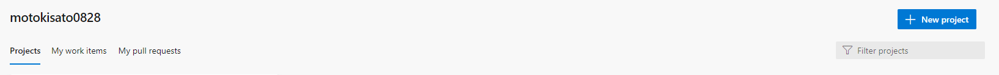[Repos] で下記のようにフォルダ構成を作成します。
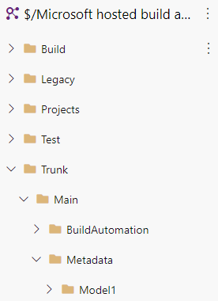
本記事では [Trunk] > [Main] > [Metadata] のような構成とします。Visual Studio を開き、Team Explorer から DevOps と VM のプロジェクトとソリューション、モデルを同期します。
サンプルとして Model Management から Model1 を作成します。名前と Publisher 以外の設定は変更しません。
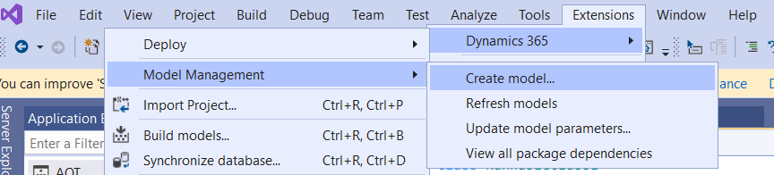
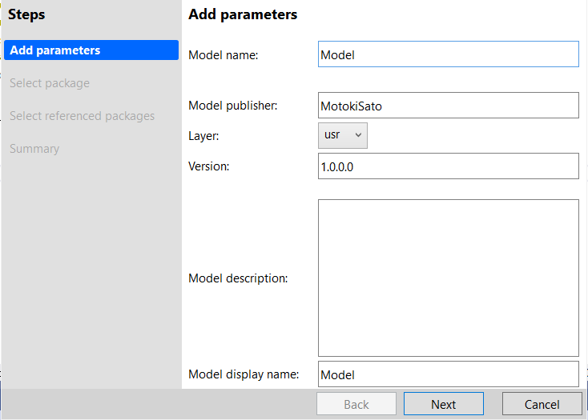
Model1 を使用して、プロジェクトを作成し、プロジェクト内にサンプルとして下記のコードを用いたクラスを作成します。
1 | class RunnableClass1 |
クラス名は RunnableClass1 としています。
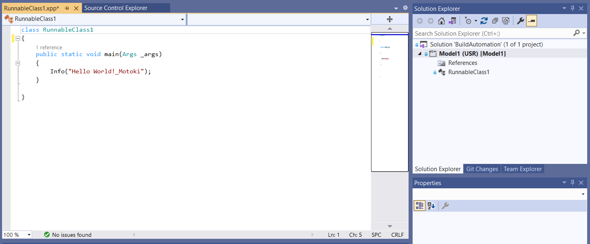
作成したクラスは Team Explorer から Azure DevOps に接続します。
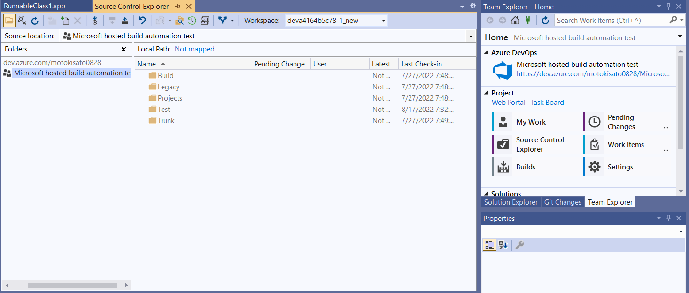
Source Control Explorer から Workspace を作成し、Azure DevOps と連携させます。
本記事では下記のように Workspace を作成します。
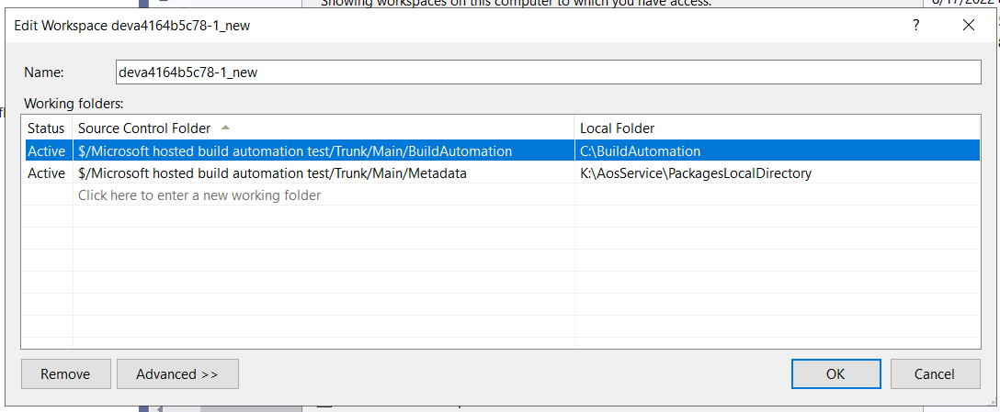
- DevOps の画面に戻り、[Repos] の構成を確認すると、下記ように配置されています。Nuget.config と packages.config については後ほど説明いたします。 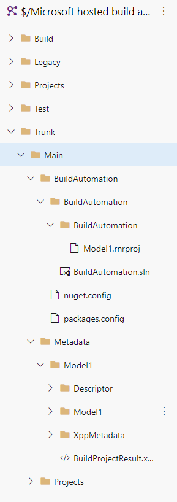
AzureDevOpsのFeedの作成
以下の手順は、下記の docs に記載されている手順となっております。
Microsoft ホステッド エージェントと Azure Pipelines を使用するビルドの自動化
まず VM で下記のファイルをまとめるようなフォルダを作成します。ここではフォルダ名を Nugets とします。
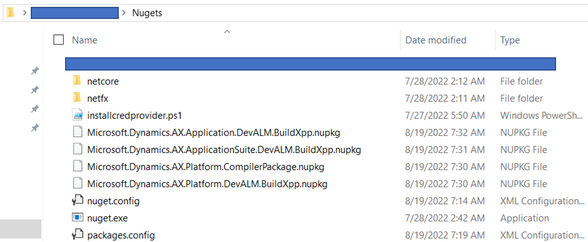ダウンロードするファイル・フォルダ
- nuget.exe
- ~.nupkg
- netcore
- netfx
自分で作成するファイル
- installcredprovider.ps1
- ~.config
これらのファイル、フォルダに関しては後ほど手順を記載します。
次に DevOps の [Artifacts] から [Feed] の作成を行います。名前以外、設定の変更は特にしません（今回の Feed 名は “D365FOAutoBuild” とします）。
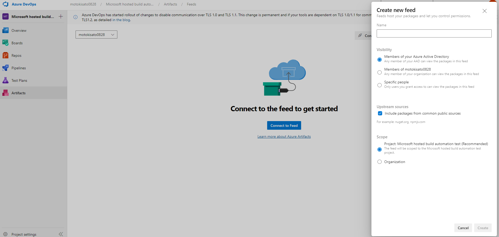作成した [Feed] で、[Connect to Feed] > [Nuget.exe] > [Project setup] の内容をそのままコピーし、nuget.config を VM フォルダ（Nugets）に作成します。
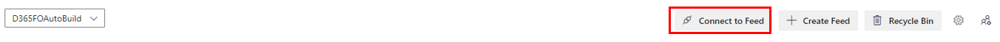 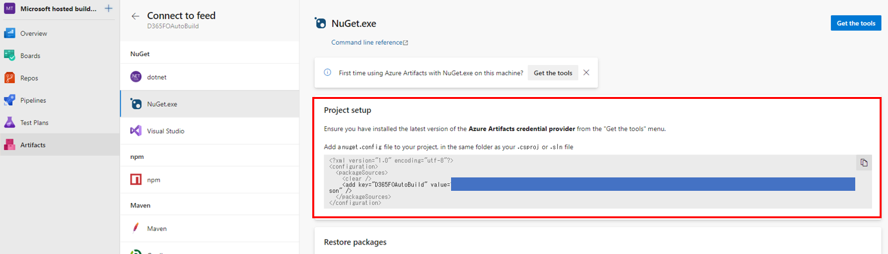 Nuget.config 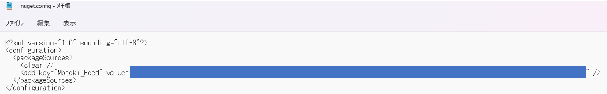VM フォルダ（Nugets）に下記のリンクから nuget.exe をダウンロードします。
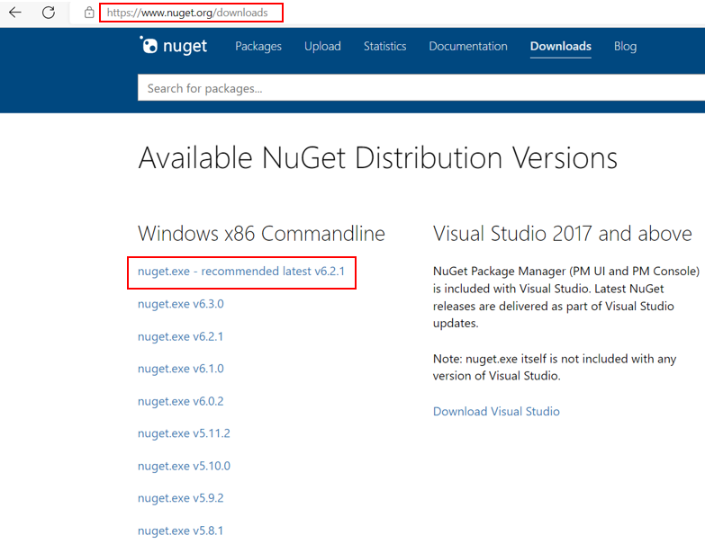
https://www.nuget.org/downloads下記の github から installcredprovider.ps1 を作成し、ローカルの Powershell で実行します。スクリプトが資格情報を要求し続けて失敗する場合は、パラメーターとして -AddNetfx を追加してみてください。
https://github.com/Microsoft/artifacts-credprovider/blob/master/helpers/installcredprovider.ps1
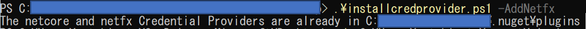
実行したら plugin の netcore, netfx のフォルダが作成されるので、Nugets フォルダにコピーします。
LCS プロジェクトの [資産ライブラリ] > [NuGet packages] > [インポート] でデプロイ先のバージョンの .nupkg ファイルを4種類ダウンロードします。また、このときの [追加の詳細] の [説明] からそれぞれの Version を記録しておきます。
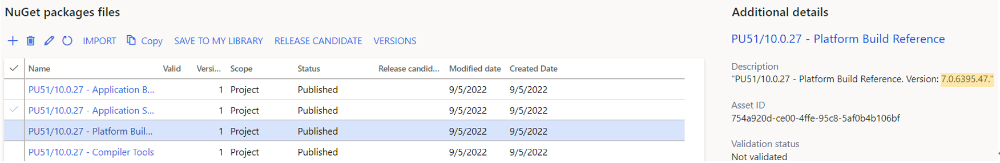 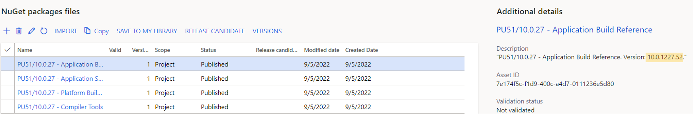
ダウンロードした .nupkg ファイルの Version に沿って Packages.config を作成します。下記のコードの Version は .nupkg ファイルの情報によって随時変更してください。
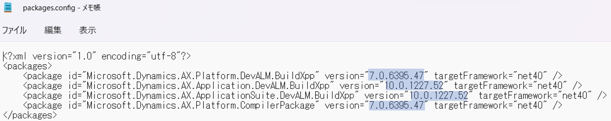
1 | <?xml version="1.0" encoding="utf-8"?> |
- Powershell から Azure DevOps の Feed に .nupkg ファイルを送ります。
※このときにリモートデスクトップ画面から行うと通信速度が早い可能性があります。 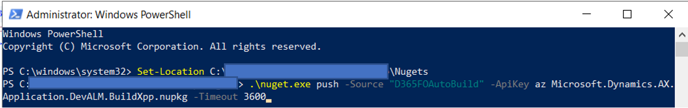
1 | .\nuget.exe push -Source "対象のFeed名" -ApiKey az Microsoft.Dynamics.AX.Application.DevALM.BuildXpp.nupkg -Timeout 3600 |
UserName とPassword を求められます
- UserName は Azure DevOps のサインインアカウント
- Password は Personal Access Token で作成 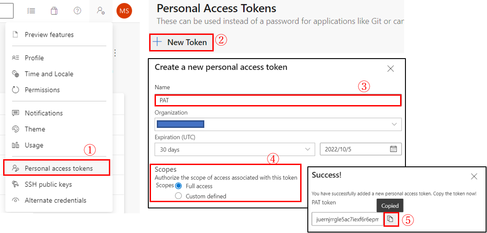
AzurePipelinesの設定
下記から、定義済みのパイプラインのダウンロードを行います（xpp-classic-ci.json）
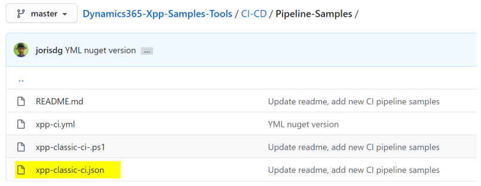
https://github.com/microsoft/Dynamics365-Xpp-Samples-Tools/tree/master/CI-CD/Pipeline-SamplesPipeline を作成します。
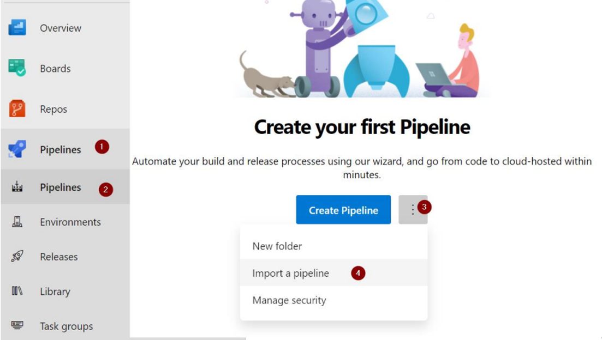先ほどダウンロードした xpp-classic-ci.json を [Import a pipeline] で選択します。
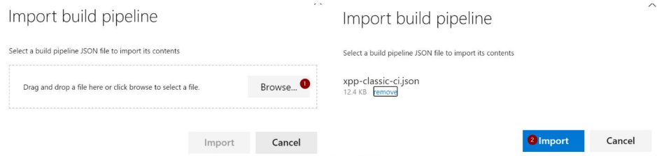Pipeline は下記のようになります。
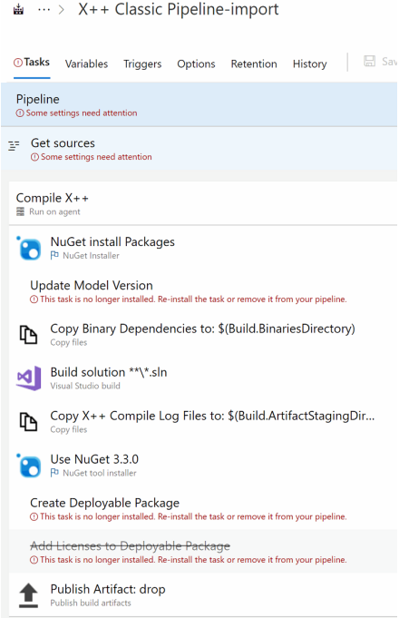
スクリーンショットの赤文字は、タスクIDの不一致により、テンプレート内の古いタスクが認識されていないことを示します。そのため、古いタスクを削除し、同じ新しいタスクを1つ追加してください。以下のスクリーンショットが今回作成するパイプラインになります。
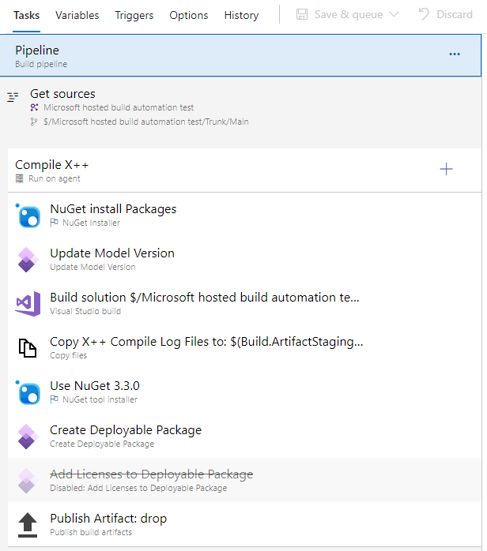
該当のタスクが見つからない場合、下記の Dynamics 365 Finance and Operations Tools のインストールを確認してください。
https://marketplace.visualstudio.com/items?itemName=Dyn365FinOps.dynamics365-finops-tools
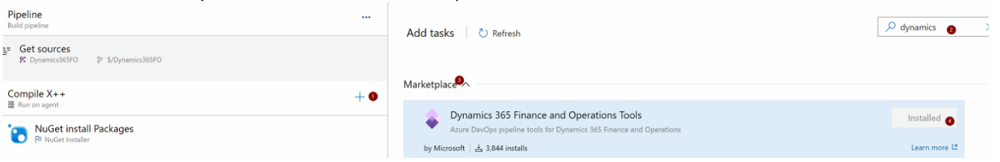
- 各タスクを設定していきます。
Pipeline
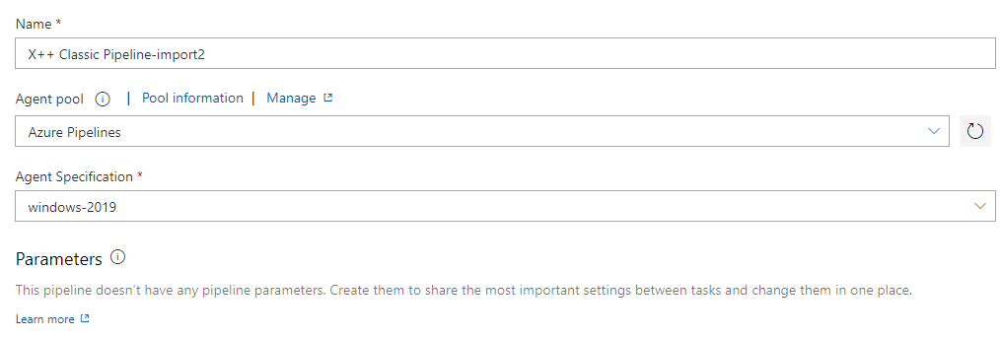Get sources
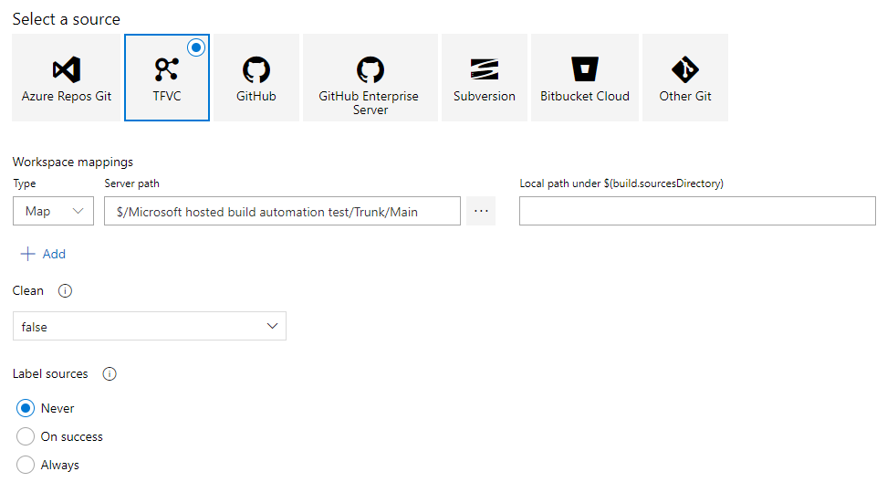Nuget installer
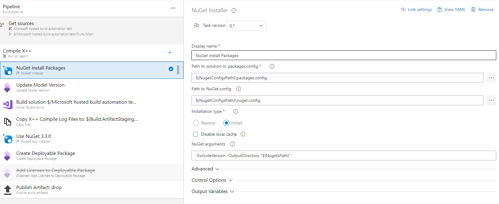Update Model Version
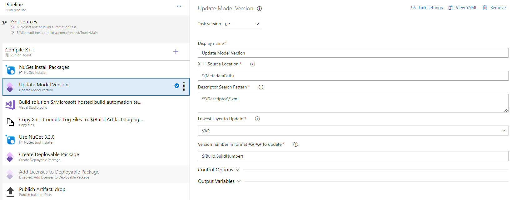Visual Studio Build
MSBuild Arguments には下記を入力します1
/p:BuildTasksDirectory="$(NugetsPath)\$(ToolsPackage)\DevAlm" /p:MetadataDirectory="$(MetadataPath)" /p:FrameworkDirectory="$(NuGetsPath)\$(ToolsPackage)" /p:ReferenceFolder="$(NuGetsPath)\$(PlatPackage)\ref\net40;$(NuGetsPath)\$(AppPackage)\ref\net40;$(NuGetsPath)\$(AppSuitePackage)\ref\net40;$(MetadataPath);$(Build.BinariesDirectory)" /p:ReferencePath="$(NuGetsPath)\$(ToolsPackage)" /p:OutputDirectory="$(Build.BinariesDirectory)"
その他はスクリーンショットをご参照ください
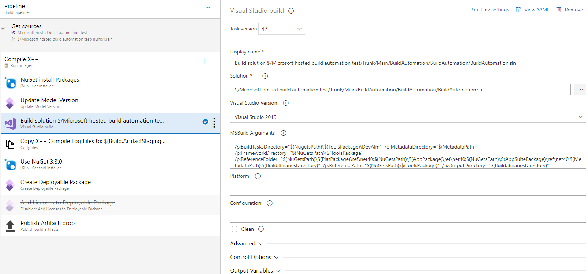Copy Files
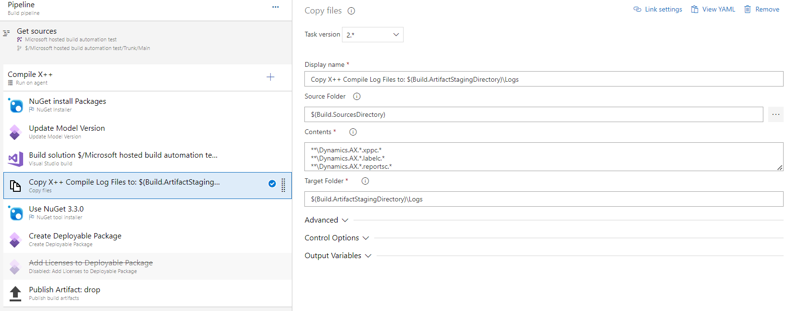NuGet Tool Installer
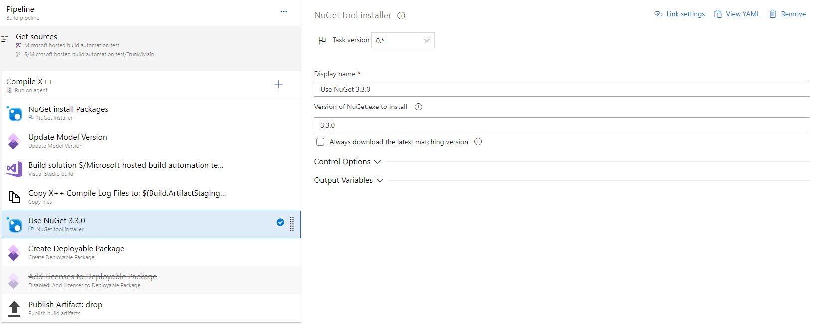Create Deployable Package
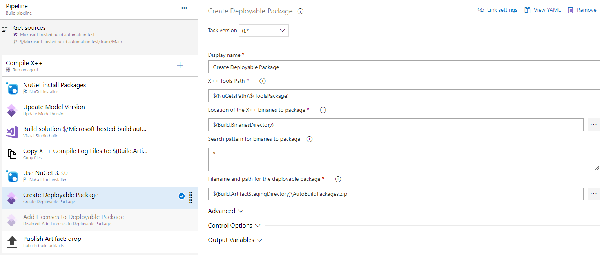Publish Artifact: drop
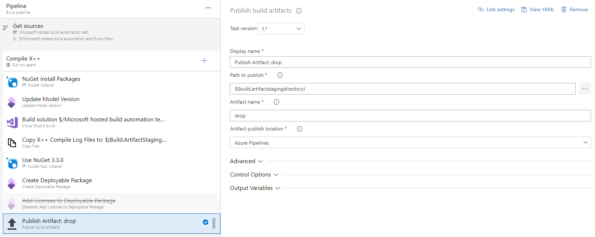
[Save & Queue]を実行します。Artifactができれば成功です。
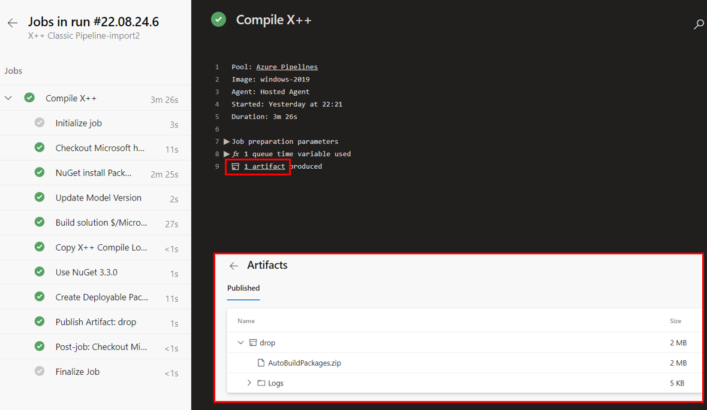
ReleasePipelineで自動アップロード・資産のデプロイを設定
2022/08/29 の時点で、LCS 認証には、多要素認証 (MFA) が有効になっていない AAD アカウントが必要です。現在、LCS の新しい認証機能として、サービス間認証などのオプションを検討中です。また以下の手順は、下記の docs に記載されている手順となっております。
Azure Pipelines を使用した資産のアップロード
Azure Active Directory アプリケーションを作成します
- Azure ポータル(https://ms.portal.azure.com/#home) > Azure Active Directory > 管理 > アプリの登録 に移動します。
- [新規登録] をクリックし、名前を入力して [登録]をクリックします。
- アプリケーションの詳細画面から、[管理] > [API のアクセス許可] > [構成されたアクセス許可] > [アクセス許可の追加] に移動します
- [所属する組織で使用している API] の下の[ Dynamics Lifecycle services] を選択します。
- [user_impersonation]権限を追加します
- [Microsoftに管理者の同意を与えます]をクリックします
- アプリケーションの詳細画面の [管理] > [認証] に移動します
- [詳細設定] > [パブリック クライアント フローを許可する] で、[次のモバイルおよびデスクトップ フローを有効にする]を [はい] に構成します。
Azure DevOps で LCS へのサービス接続を作成します
- DevOps プロジェクトの [プロジェクト設定] > [パイプライン] > [サービス接続] に移動します。
- [新しいサービス接続] をクリックします
[Dynamics Lifecycle Services] を選択します
次の詳細を入力します。
ユーザー名:プロジェクトとアセット ライブラリにアクセスできる LCS 資格情報
パスワード:ユーザー名で使用したアカウントのパスワード
アプリケーション ID:これは、前のステップで作成されたアプリケーションのアプリ/クライアント ID です。
サービス接続名:任意の名前を指定します下記のスクリーンショットの黄色の四角には同じドメインを入力してください。
リリースパイプラインを作成します
- [Pipeline] > [Releases] > [New] > [New Release pipeline] を開きます。（名前を “Upload and Deploy” としています）
- [Artifact] > [Add] から作成した Pipeline を選択します。また、[Stages] > [Add] > [New Stage] から Stage を作成します。
- [Task] バーから task を作成します。
Agent job
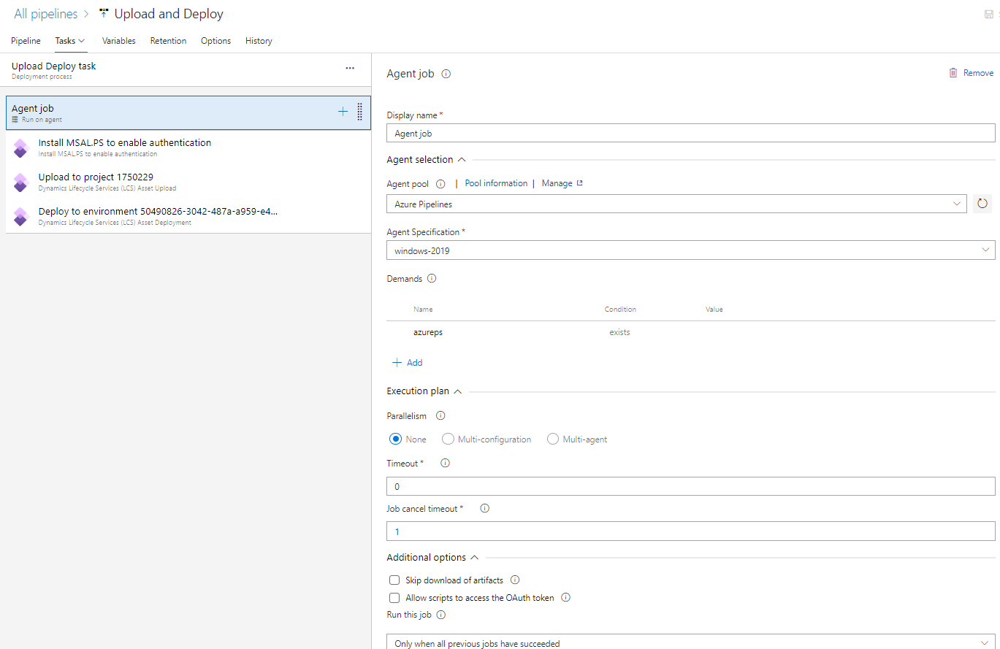Insatll MSAL.PS to enable authentication
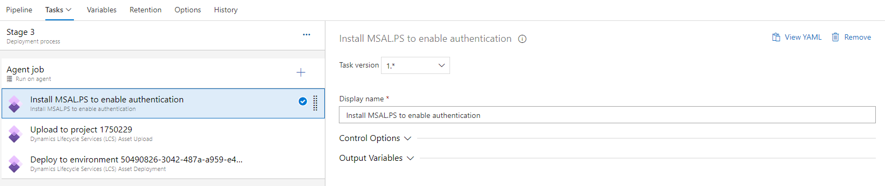Dynamics Lifecycle Servicies (LCS) Asset Upload
LCS Project ID は、デプロイ対象の環境をブラウザで開いた際の URL の末尾にある数字 7 桁を入力します
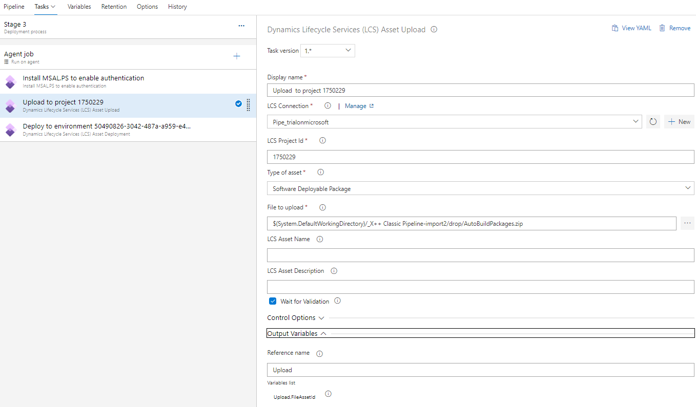
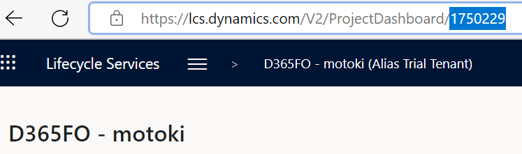
- Dynamics Lifecycle Servicies (LCS) Asset Deployment 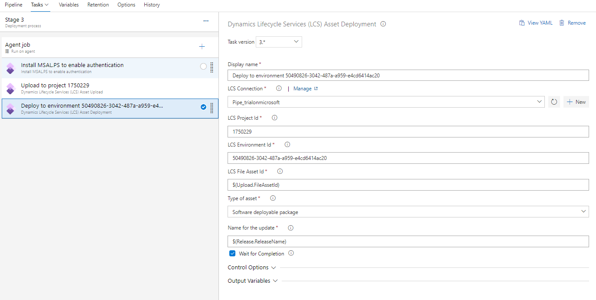
Artifact の右上のマークから [Continuous deployment trigger]を[Enabled] に設定して、[Create release] をすると、Pipeline のビルドが終わったときに自動的にリリースパイプラインが実行されます。
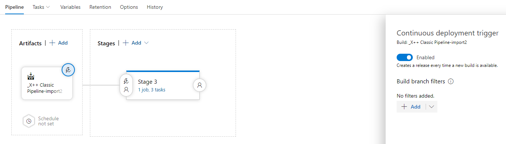リリースパイプラインが成功したら、[Releases] から今回実行したパイプラインを選択すると、下記のような Succeeded の表記が確認されます。
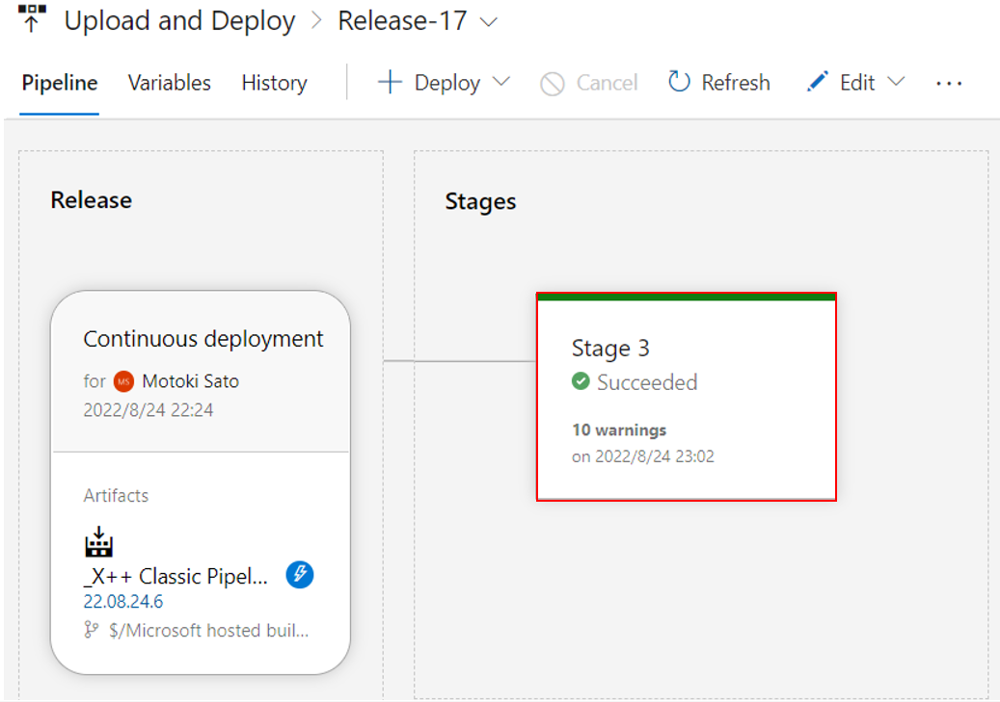今回の場合、対象の環境にてURLの .dynamics.com の後ろに下記を張り付けると、メッセージが表示され、開発したコードの内容が反映されていることが分かります。
1 | /?cmp=DAT&mi=SysClassRunner&cls=RunnableClass1 |
ReleasePipelineで起こる可能性のあるエラー
環境の不一致では下記のエラーが確認されます
1 | ##[error]Error in request to deploy file asset: 'Deployable package environment validation failed' (Operation Activity Id: '~~~~~~~~~~~~~~~~~~~') |
.nupkg の対象のバージョンと、デプロイ先の環境のバージョンが一致することを確かめてください。
- LCS への接続で下記のようなエラーが発生することがあります。その際は [Feed] > [Feed Setting] > [Add users/group] で『”プロジェクト名”（組織名）』で “Contributor” を選択すると解決する可能性がございます。
1
##[error]The process '/usr/bin/docker' failed with exit code 1
注意
上記の手順、手順内の画像については本記事の執筆時のものです。
実際の画面とは挙動に違いがある可能性がございます。
おわりに
以上、Dynamics 365 Finance and Operations にて、Azure Pipelines と Microsoft-hosted agents を使用したビルドの手順をご紹介させていただきました。
もし、お困りのこと等がございましたら、弊社までお問い合わせ頂きますようお願いいたします。
※本情報の内容（添付文書、リンク先などを含む）は、作成日時点でのものであり、予告なく変更される場合があります。